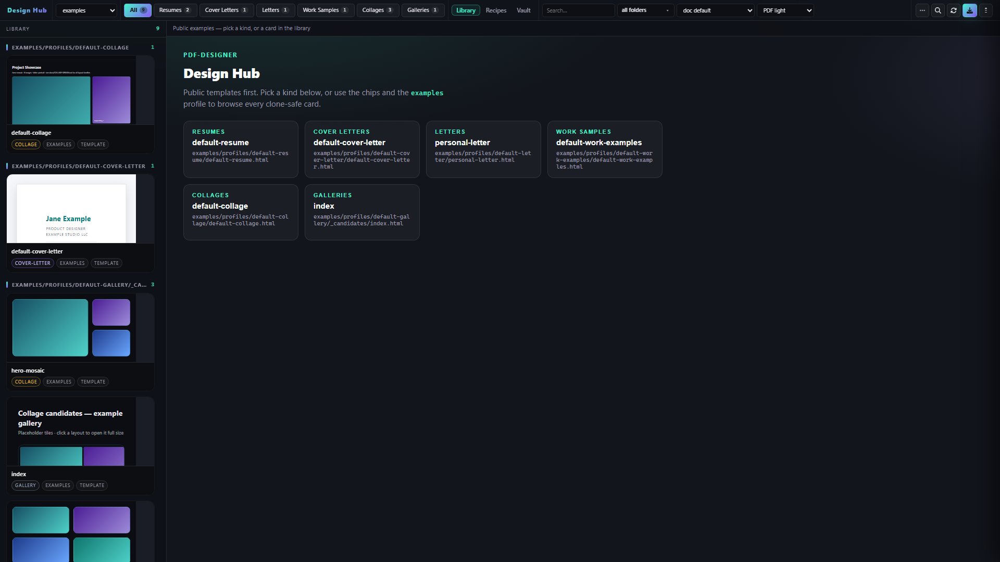
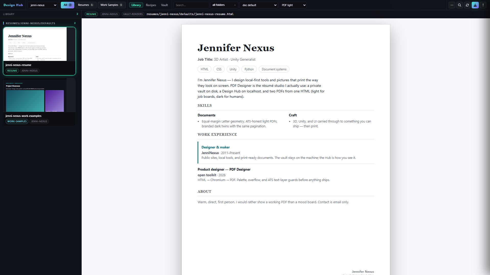
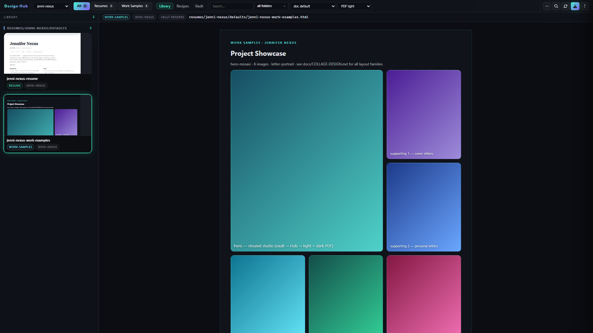
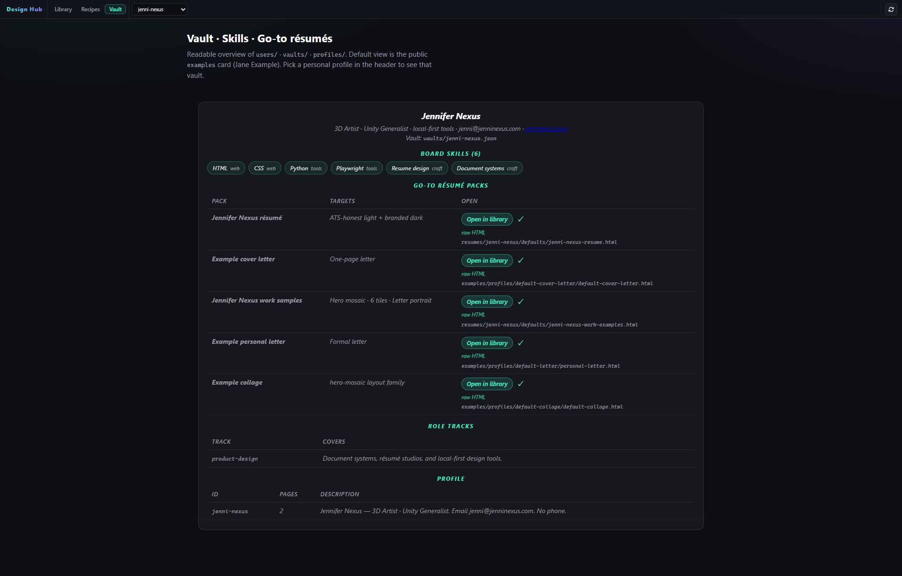
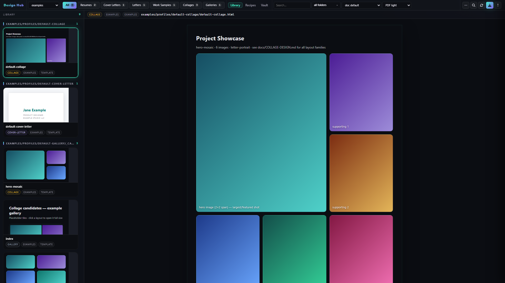
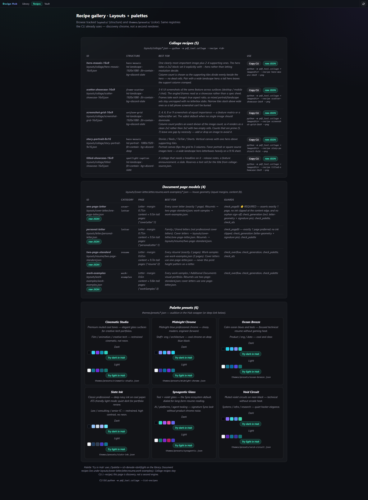
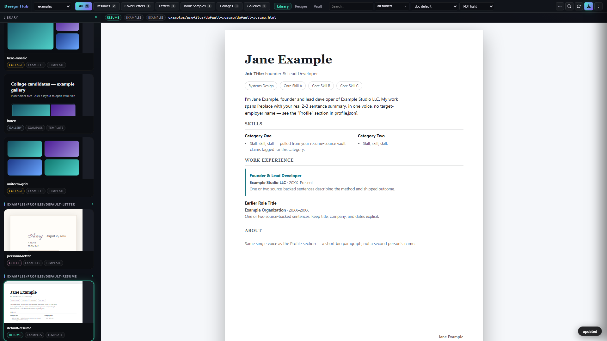

Public-brand stills · no phone · no legal last name
JenniferNexus — Design Hub stills
These are the GitHub / Patreon / Discord pictures. Hub home and Jane Example are what a clone sees. Jennifer Nexus is the public-brand screenshot pack (jenni@jenninexus.com, email only). Open this file locally: docs/images/review.html.

Home landing Clone-safe library. Profile = examples. Use for “what you get on git clone.”

Jennifer Nexus résumé (light / ATS) Real first name, Nexus not Sylvester, no phone. Footer email is the public brand default.

Work samples mosaic Hero-mosaic Letter portrait under the Jennifer Nexus pack.

Vault card Skills + go-to packs. Email visible, no phone, no private employers.

Collage recipe Public examples profile (Jane Example in the sidebar is the clone identity — that is correct).

Recipes Layouts + palettes. No personal vault.

Jane Example résumé The tracked public template a stranger clones. Not for “this is me” posts — use Jennifer Nexus for those.